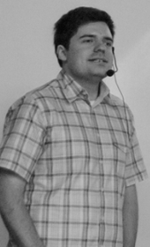
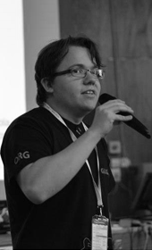

<div class="about authors">
  <div class="container row-fluid size">
    <div class="col-md-2">
      
    </div>
    <div class="col-md-4">
      <h3>Michal Těhník</h3>
      <p>
        Michal je v první řadě programátor, který se nebojí žádného jazyka nebo technologie. Jeho zájmy jsou různé od běhání, přes zdolávání ferrat, až po rozjímání nad filozofickými tématy u dobrého čaje.
      </p>
      <p><a target="_blank" href="http://www.mictech.cz">mictech.cz</a></p>
    </div>
    <div class="col-md-2">
      
    </div>
    <div class="col-md-4">
      <h3>Jirka Pénzeš</h3>
      <p>
        Jirka je milovníkem dobré kávy a programování. Má rád zejména backendové jazyky jako Javu nebo C#. V současnosti jsou jeho velkým zájmem distribuované simulace. Mimo vývoje a kávy má rád osobní rozvoj, běhání nebo čtení dobré knihy.
      </p>
      <p><a target="_blank" href="http://www.penzes.cz">penzes.cz</a></p>
    </div>
  </div>
</div>  